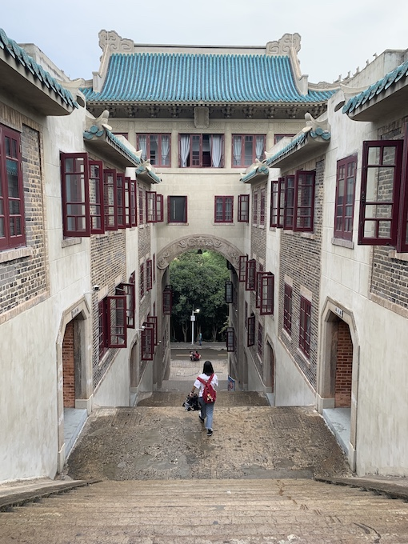

-
清迈

- 清迈，是泰国北部最大的城市，也是泰国的文化和历史中心之一。作为昔日兰纳王国的首都，清迈拥有丰富的历史遗产和独特的文化氛围。古城中环绕着护城河和城墙，保留着众多古老的佛教寺庙。清迈以其宁静的生活节奏、美丽的自然风光以及充满活力的夜市而闻名。这里还是泰国重要的手工艺品中心，包括传统的丝绸、陶瓷、银器和木雕制品。每年一度的水灯节更是吸引着来自世界各地的游客前来体验清迈的独特魅力。
- TH 游记
-
东京

- 东京，是日本的首都，也是全球最大的都市区之一，以其繁华的商业、时尚和娱乐场所闻名于世。其不仅是日本的政治和经济中心，还是一个融合了传统与现代、东方与西方文化的独特城市。东京是世界上轨道路网密度最高的都市之一。东京拥有历史悠久的明治神宫、充满未来感的涩谷和秋叶原电子商务区、以及高耸的东京塔和东京晴空塔。东京还以其世界级的美食、时尚前沿的购物体验以及繁忙的街头生活而吸引着来自世界各地的游客。
- JP 游记
-
横滨

- 横滨，是日本神奈川县的一个港口城市，也是日本人口第二多的城市。横滨自19世纪末开港以来，就发展成为日本主要的商业和工业中心之一。这座城市以其美丽的海滨景观、现代化的建筑和充满活力的市中心而闻名。横滨港是日本最繁忙的港口之一，也是著名的旅游景点，其中包括美丽的山下公园和充满未来感的横滨港未来21。
- JP 游记
-
吉隆坡
- 吉隆坡，简称“隆市”，是马来西亚的首都与最大、人口最多以及最密集的城市，是一座对东南亚的文化、教育、体育、经济、商业、金融等具有极大影响力的国际都市，是东南亚外交的两大中心之一。吉隆坡被联合国教育、科学及文化组织命名为“2020年世界图书之都”。
- MA 游记
-
马六甲

- 马六甲，简称“甲州”。中国明代航海家郑和率领船队七下西洋，其中五次驻节马六甲，将中国丝绸、茶叶、瓷器等产品和先进的生产技术带到这里，使马六甲成为繁荣一时的贸易中心。首府马六甲市被联合国教科文组织列为世界文化遗产。
- MA 游记
-
槟城
- 槟城，是远东最早的商业中心，是孙中山先生从事革命活动的重要基地。其不仅以多元文化和谐发展著称，而且以“电子制造业基地”享誉全球。其是马来西亚最具文艺范的地方，有“印度洋绿宝石”、“东方硅谷”等称号。首府乔治市被联合国教科文组织列为世界文化遗产。
- MA 游记
-
南浔

- 南浔，是一个人文资源充足、中西建筑合璧的江南古镇。其素有“文化之邦”和“诗书之乡”之称。古镇以十字河为骨架，街和民居沿河分布，随河而走，街巷肌理完整，河道水系基本保存。既有傍水筑宇、沿河成街的江南水乡小镇风貌，又有众多高品质的私家大宅第和江南园林，形成了小桥流水人家与大宅园林交相辉映的街区特色。
- ZJ 游记
-
重庆
- 重庆，简称“渝”，是长江上游地区的经济、金融、科创、航运和商贸物流中心，国家物流枢纽。其既以江城、雾都、桥都著称，又以山城扬名。重庆抗战时期为国民政府陪都，同时也是“红岩精神”起源地，巴渝文化发祥地。
- CQ 游记
-
广佛
- 广州，简称“穗”，别称羊城、花城，被评为世界一线城市。其从秦朝开始一直是郡治、州治、府治的所在地，华南地区的政治、军事、经济、文化和科教中心，也是世界上唯一两千多年长盛不衰的大港。 佛山，简称“禅”，是中国天下四聚、四大名镇之一，有武术之乡、粤剧之乡之称，是中国龙舟龙狮文化名城，粤剧发源地，广府文化发源地、兴盛地、传承地。如今也是全国民营经济最为发达的地区之一。
- GD 游记
-
武汉
- 武汉，简称“汉”，别称江城，中国中部地区的中心城市。春秋战国以来，武汉长期是中国南方的军事商贸重镇；明清时期的汉口被称为“天下四聚”之一；清末汉口成为近代中国重要的经济中心之一，汉阳成为中国近代工业文明发祥地之一，武昌起义作为辛亥革命的开端，具有重要历史意义。
- HB 游记
-
淳安
- 千岛湖，即新安江水库，位于浙江省杭州市淳安县境内，小部分连接杭州市建德市西北，是为建新安江水电站拦蓄新安江下游而成的人工湖。千岛湖水在中国大江大湖中位居优质水之首，为国家一级水体，不经任何处理即达饮用水标准，被誉为“天下第一秀水”。
- ZJ 游记
-
深澳

- 深圳别称“鹏城”，是中国四大一线城市及三大全国性金融中心之一，是中国设立的第一个经济特区，是中国改革开放的窗口和新兴移民城市，是连接香港和中国内地的纽带和桥梁。 澳门是世界旅游休闲中心，也是世界四大赌城之一，经过100多年东西方文化的碰撞成为了一个风貌独特的城市，其历史城区属于联合国世界文化遗产。
- GD 游记
-
天台
- 天台为“国家级生态县”，以境内国家5A级旅游景区天台山而得名，以佛宗道源、山水神秀著称。国清寺成为佛教天台宗的祖庭，桐柏宫为道教南宗祖庭，赤城山玉京洞为道教第六大洞天。天台县还是中国第一个围棋之乡，也是围棋国手俞斌的故乡。
- ZJ 游记
-
嘉兴

- 嘉兴自古为繁华富庶之地，素有“鱼米之乡”、“丝绸之府”美誉，具有典型的江南水乡风情。近代以来大师辈出，如茅盾、徐志摩、金庸、陈省身、王国维、丰子恺、张乐平等。旅游资源多集中于辖区古镇，市区作为中国共产党的诞生地，以红色旅游为主。
- ZJ 游记
-
哥德堡
- 哥德堡(Göteborg)为瑞典第二大城市，坐落在瑞典的西海岸卡特加特海峡，瑞典最大的河流-约塔河从此出海，是一座风光秀丽的海港城。哥德堡港终年不冻，成为瑞典和西欧通航的主要港埠。又因其地处哥本哈根、奥斯陆和斯德哥尔摩三个北欧国家首都的中心，故为北欧咽喉，方圆300公里以内是北欧三国的工业中心。
- SE 游记
-
郑洛

- 郑州是华夏文明重要发祥地之一，为中华人文始祖轩辕黄帝的故里，历史上曾五次为都，是中国八大古都之一，境内登封市以“天下第一名刹”少林寺及“峻极于天”嵩山闻名。 洛阳，因地处洛河之阳而得名，是华夏文明和中华民族的发源地之一，中国四大古都之一，又因牡丹而闻名于世，有“洛阳牡丹甲天下”之称，被誉为“千年帝都，牡丹花城”。
- HN 游记
-
新加坡

- 新加坡位于马六甲海峡咽喉地带，是继纽约、伦敦、香港之后的第四大国际金融中心，也是亚洲重要的服务和航运中心之一。新加坡是一个移民国家，多民族、多语言、多宗教共同组成了其独特的多元文化体系。由于地处热带，又三面环海，导致其终年恒温31摄氏度，环境舒适，但过快的城市节奏与繁重的生活压力反倒使其并不适宜定居。
- SG 游记
-
润扬
- 镇江，素有“天下第一江山”之美誉，长江和京杭大运河在此交汇，使得其成为“东南咽喉，南北门户”，历代皆为军事要地。 扬州，江苏省陆域地理几何中心，有“淮左名都，竹西佳处”，“中国运河第一城”之称，自隋朝以来，成为南方经济中心，有"天下之盛,扬为首"之说。
- JS 游记
-
西安
- 西安，古称长安、镐京，是中华文明和中华民族重要发祥地，丝绸之路起点，十三朝古都使其成为中国四大古都之一，亦是世界十大古都之一，北濒渭河，南依秦岭，八水润长安。汉唐盛世造就了其丰富的历史文化旅游资源，两项六处遗产被列入《世界遗产名录》，秦始皇陵及兵马俑更被誉为“世界第八大奇迹”。
- SX 游记
-
曼芭
- 曼谷，别名“天使之城”，又被誉为“佛教之都”，是世界上名字最长的首都。因为其低廉的消费水平、较高的生活水平以及开放的生活态度，所以成为了全球最受欢迎旅游城市。 芭提雅，一座海滩度假、房产投资、旅游、养老圣地，享有“东方夏威夷”之誉，凭借着美丽的海景、新奇的乐园、还有最负盛名的人妖表演，缤纷无休的夜文化，吸引着全世界的游客。
- TH 游记
-
南京
- 南京是中国四大古都，是中华文明的重要发祥地，历史上曾数次庇佑华夏之正朔，是四大古都中唯一未做过异族政权首都的古都，长期是中国南方的政治、经济、文化中心，有“六朝古都”、“十朝都会”之称。其自古以来崇文重教，有“天下文枢”、“东南第一学”的美誉，明清时期中国一半以上的状元均出自南京江南贡院。
- JS 游记